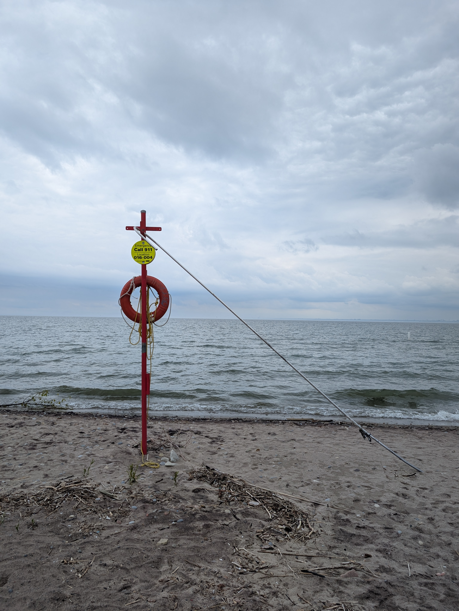
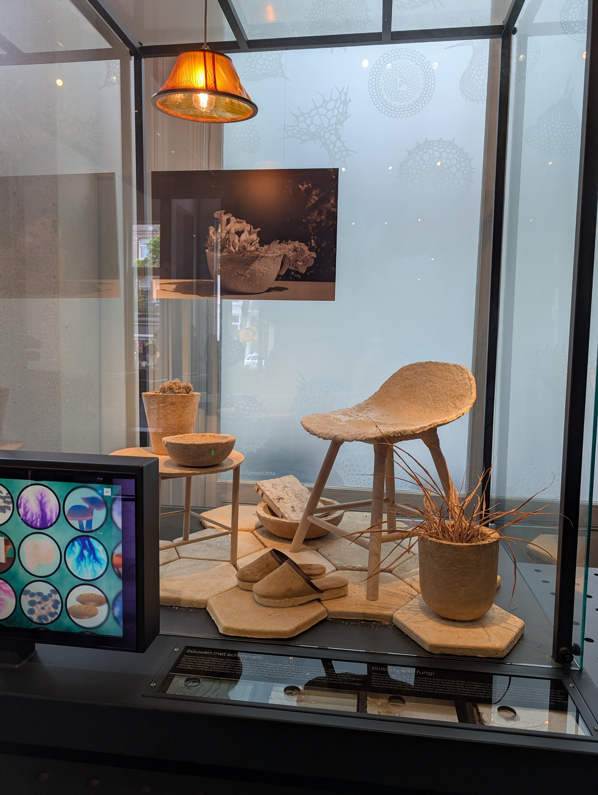
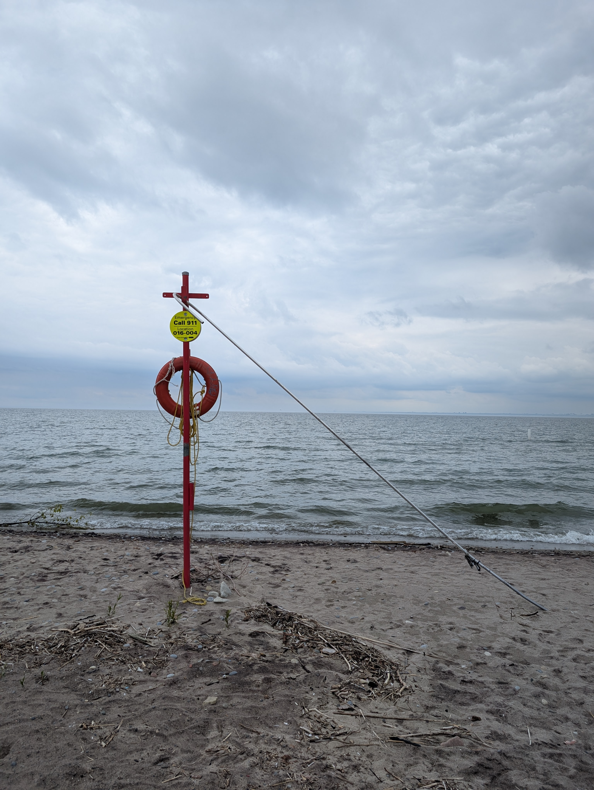
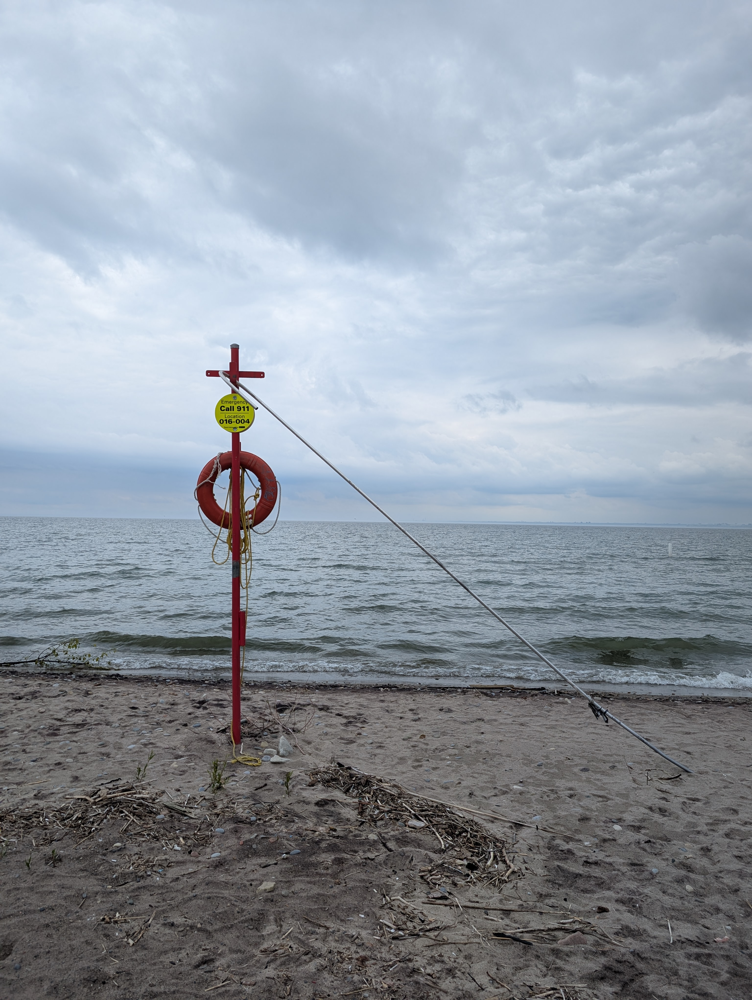

I recently went on my first big trip since 2018! The main point of the trip was to attend the EuroVis
conference in Luxembourg. I wasn't presenting anything there, but I hadn't been to a conference in
person before so I convinced my supervisor Tamara to pay for part of the trip. To make it worth while,
I decided to add on some personal travel in other cities as well. I first went to Toronto, where I
spent most of my time visiting with my friend Hayley who is living there for a couple months for a
CBC internship. Then I went to Amsterdam, since it is a city I hadn't been to before but that is
supposed to be a fun place, and because tickets to the Schiphol airport are a bit cheaper. After that,
I took the bus to Luxembourg for the conference. Finally, I flew to Oslo to visit with one of my host
families from when I was on exchange in Norway.

Some pictures from my time in Toronto. Hayley and I checked out the Royal Ontario Museum and walked
around the city a bunch on the first day I was there, and we visited the Toronto aquarium during my
last evening in the city. The aquarium was amazing, I'd recommend it to anyone visiting Toronto. I
also appreciated the street art and murals in Toronto a lot!
While I was travelling, I took a lot of pictures, and I stored them all in a Google Photos album. Now,
I've extracted all of the metadata of the images and coded them all for the content of the image and
the reason I took the picture. In this first visualization, you can see how the different contents in
the images and the reasons I took the pictures changed over time, as well as when I tended to take
pictures during my time in each city.
In Toronto, most of my pictures are from my aquarium visit, which is why they're mostly of animals. In
Luxembourg, it was when I was on the city tour on the second day of the conference. In Oslo, it was
the first day when I was mostly just walking around and enjoying being back in Norway before I had
met my host family.

Pictures from Amsterdam! A lot of the museums were super busy, so the only one I went to was Micropia,
which was on the microscope and miscroscopic life. The chair and other stuff in the first picture is
made out of fungus! I also tried a real fresh stroopwafel and it was incredible. The best time I had
there though was in Cafe Saarein, a lesbian bar that I went to both nights I was there. The people were
so friendly and it felt so welcoming.
The visualizations below show what time of day I took each picture at around a 24-hour clock. I decided
to use the metaphor of a stack of polaroids which are being viewed from above. The first
row uses the inner colour of each polaroid to show the content of the image, the second row uses it to
show the reason. The inner circles show the day/night cycle in each of the cities when I was there. You
can hover over each individual polaroid and see the actual picture as well as the data!
I think the most interesting things here are the gaps. I find it interesting that I never took pictures
between 5pm and 6pm in Toronto, or between 5pm and 8pm in Amsterdam. It reminds me that when I was in
Amsterdam, I took a nap or rested in my hostel room in the late afternoon both days.
Pictures from my time in Luxembourg. I had a great time, and the city is very pretty and somehow manages
to be both very old and very modern at the same time. The conference was great, I saw a lot of really
interesting work (a poster and talk that I thought were particularly cool are shown here) and met so
many new people, some of whom have become real friends!
This last visualization shows why I chose to take photos of each type. It uses the polaroid metaphor again,
with the colour inside the polaroid showing the reason that I took the picture. They're sorted so that you
can see the most common reasons for each photo content type. You can hover over these to see the full
pictures as well!
Everything I see here makes sense to me. I mostly took pictures of views or scenes because they were pretty or
otherwise nice to look at, the animals and objects were the funniest ones, I took pictures of food to record
(and rate!) it, and my selfies are either to record what I was wearing or because I felt cute at the time!
Pictures from Oslo. I really love Norwegian art. The normality of nudity in art is really nice, and the statues
in the city are often about interpersonal relationships and humans in nature, which I like. I spent most of my
time here reconnecting with one of my host families from when I was on exchange. The first evening I was there,
we went to a Palestinian restuarant and saw each other for the first time in many years. The next day we went
to the new Edvard Munch museum in Oslo. I love Munch's art, and I took a lot of pictures of the pieces I thought
were especially nice. It's cool that, before he died, he gave all of his art to the Municipality of Oslo, so
the city actually owns and takes care of it all. The rest of the time I was in Oslo, I mostly just walked around,
practiced Norwegian (which came back to me surprisingly quickly!) and enjoyed the nostalgia from when I lived
there.
Overall, I had an amazing trip. Nothing went wrong (I was actually really anxious), I loved all the places I
visited for different reasons, and I connected with so many people that I had both known before and met on the
trip. I have some more travel coming up this year and my confidence with travelling is so much higher now, I
feel much less afraid. Mexico City, Vienna, and Munich, I'll see you all soon!


 
